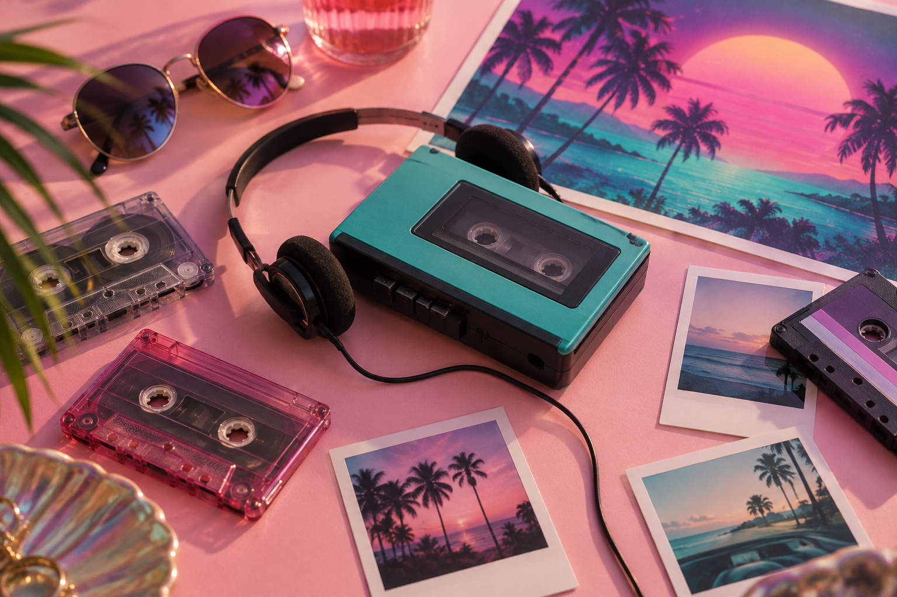
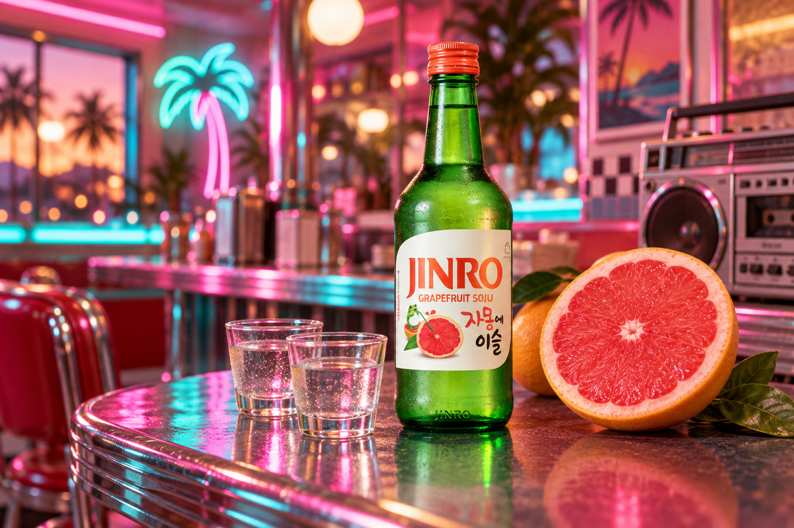

Is GTA 6 Bringing Retro Back? Vice City and the Return of ’80s Style
With GTA 6 bringing back Vice City, neon skies, palm trees and ’80s style are all over your feed again.
GTA 6 is set to arrive on November 19, and its return to Vice City has the internet talking about one look in particular: the ’80s.
Pink and purple skies, palm trees, vintage sports cars and neon-lit streets. This style is showing up far beyond gaming, from fashion and music to photo edits and brand design.
So why does retro keep coming back? Here is a quick guide to the look, and a few easy ways to try it yourself.

1. Vice City: Why Its Retro Look Is So Easy to Recognize
Vice City has always had one of the most distinctive looks in the GTA series. Inspired by Miami, it mixes a beach-city setting with 1980s pop culture.
Soft pinks, blue-purple tones, Art Deco buildings, palm tree silhouettes and synth-heavy music all add up to a style you can spot instantly.
Many of these elements never fully left. Retro fonts, color gradients and neon lights still show up in fashion, photography and design today. Vice City puts them together in a way that feels both familiar and fresh.
2. From Music to Fashion: Why Retro Trends Keep Coming Back
Retro trends are not just copies of the past. Each generation picks the parts it likes and remixes them.
In music, synth-pop, disco and retro electronic sounds keep getting new versions from new artists. In fashion, loose silhouettes, vintage sportswear and classic color palettes keep returning.
Social media speeds this up. One retro photo filter or one old song in a viral video can start a new trend almost overnight.
For younger fans, retro is less about nostalgia and more about personal style. It is a way to stand out with something that already feels classic.

3. How to Try the ’80s Retro Aesthetic Right Now
You do not need a game console to join in. Here are a few easy ways to try the look:
Edit it: Give your photos a sunset or neon filter with pink, purple and teal tones.
Play it: Put together a synthwave or city pop playlist for your next hangout.
Wear it: Pull out pastel colors, oversized jackets and vintage sunglasses.

4. Classic Never Means Outdated: JINRO Toad and JINRO Grapefruit
Brands have their own version of retro, too. A classic logo, a signature color or a familiar character can feel just as fresh today as it did years ago.
JINRO Toad is a good example. The character keeps showing up in new designs and campaigns while staying instantly recognizable.
If you would like to add JINRO to a retro-themed night, JINRO Grapefruit fits right in. Its bright grapefruit flavor and pink tones match the neon sunset palette. Serve it chilled.

5. True Classics Never Go Out of Style
From Vice City’s neon streets to the ’80s looks on your feed, trends keep changing, but classic elements always find a way back.
Each time they return, they come back a little different. That is what keeps them interesting.
Which retro look are you trying first?
To discover more Korean food stories and JINRO pairings, visit JINRO Global’s official Instagram, Facebook, and YouTube.
This article is intended for readers of legal drinking age. Please enjoy JINRO responsibly and in moderation, and never drink and drive.